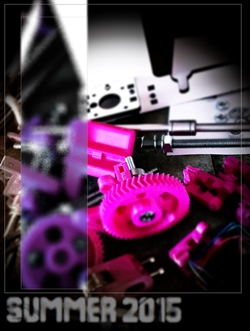
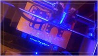
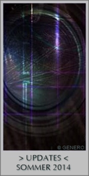
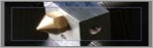

|  |
.SPRING/SUMMER 2015.. News and updates about 3D printing are now numerous everywhere. Adopt a media management system and choose the news you receive by themes at 3d Print Pulse . 3D Print Anything Anywhere with Thingiverse’s New 3D Hubs Button, read the full article @ 3D printing industry HERE. . Windows 10 will contain new 3D printing file formats, read more @ 3D Design & engineering Conference. |
. Solidworks presents: . How 3D Printer Filament Is Made . The hotest new this spring is Carbon3D |

| . Shapeways officially completed the move to our new Dutch factory in Eindhoven this autumn, take a tour in their 3D printing factory : Video here. |
.WINTER 2014 /2015.. 3d print and additive manufacturing conference & expo in Berlin March 3-4, 2015 HERE, and complete schedule of the events worldwide @ 3D Print Pulse. . Next pasta shapes? Barilla announces winners of its 3D Printed Pasta contest, read it HERE. . Here a little overview of the food 3d printers, where they are now, and what they will feed you with in the future: 11 Food 3D Printers to Feed the Future. .Already dreamt of filling your home with museums artifacts ? Now it's possible, Sketchfab offers 3D printing artifact service from the British Museum,you can print read it here, or more news at Inside 3DP. |
. Yearning for bigger printers? James Chang, retired as a mechanical engineer, is Working on the Biggest CMYKW 3D Printer Known. The whole project+video are here..  . Used to USA weapon's addiction? 25-year-old machinist from Pennsylvania found out that bullets can also be 3D printed: New bullets could make 3D printed guns a dangerous reality. |
.IN BRIEF.
. 3D hubs publish a . Buy, upload, sell 3D-models at . Looking for filament, bulk/mall shipments, Aldia co. ltd |

|  |
. Well, we already know meshlab and other huge converters. But if you're looking for a simple universal converter, to help you to jump from one program to another without pain, I found a little tool that is truly nice & useful. This converter will convert any of your 3D format in the 3d format you wish in less that ONE MINUT, try it for free or send your support to : ONLINE 3D CONVERTER . The 3D printing technology available to the public is constantly growing, proposing even more dynamic and innovative materials and applications. Some ads campaigns are worth to mention : Coca Cola supporting the EKOCYCLE 3D printer, that will be able to print with used plastic bottles. . Check also out the 3D hubs blogs and naturally the Stem system soon available for all the Oculus rifters! |
. It was just a question of time for the 3D printing movment finds a way to include the kids in the big picture. It is finally done, as Shapeways + Google wish to inspire young girls to code, and create jewels/pets etc with a 3D modeling program. Check it all out at Shapeways/Made with code. . For the Norwegian readers, you can go and buy the June 2014 'VI menn' magazine, and find out more about 3D printing, and see the 10 things you can make with 3D printing.  .3D print headquarters created a serie of blogs posts dedicated to 3D printing. |
.EARLIER UPDATES.
|